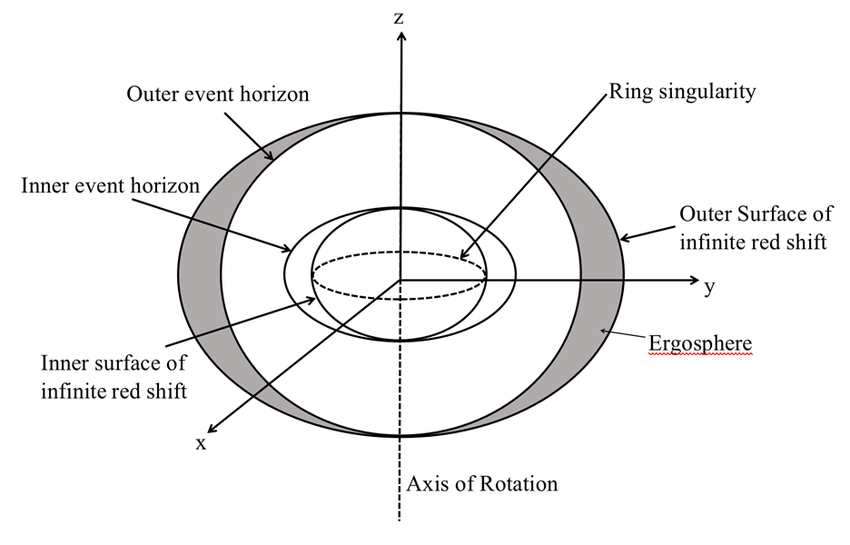
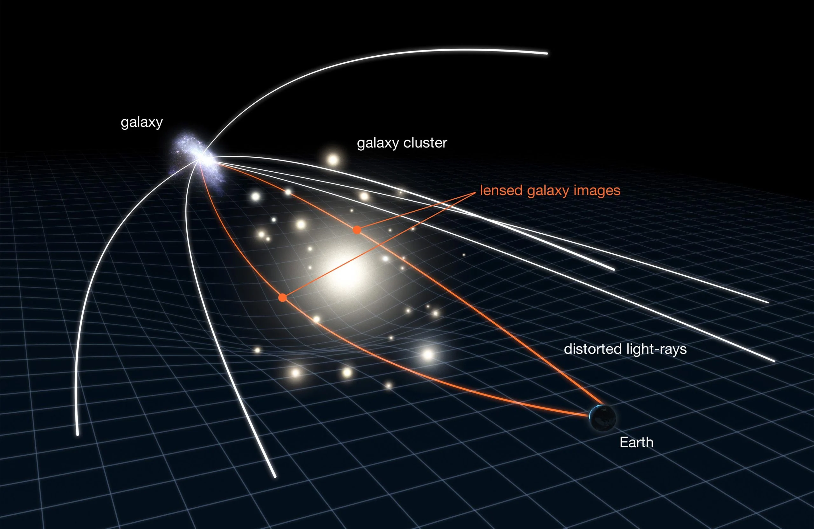
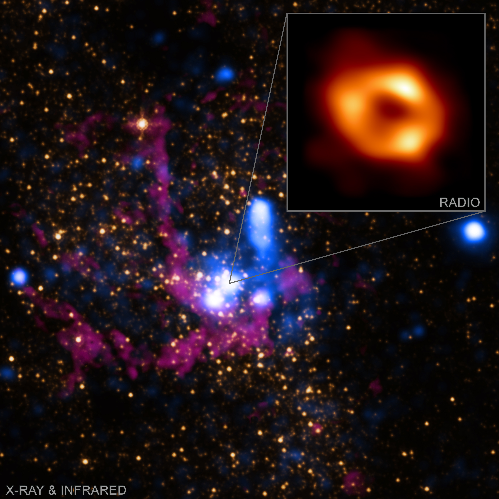
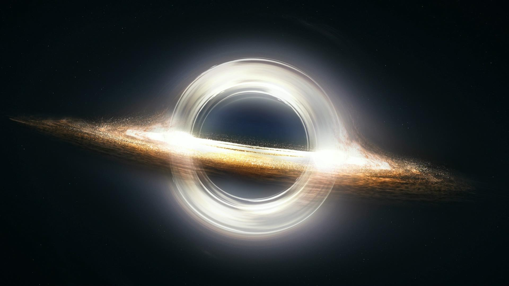
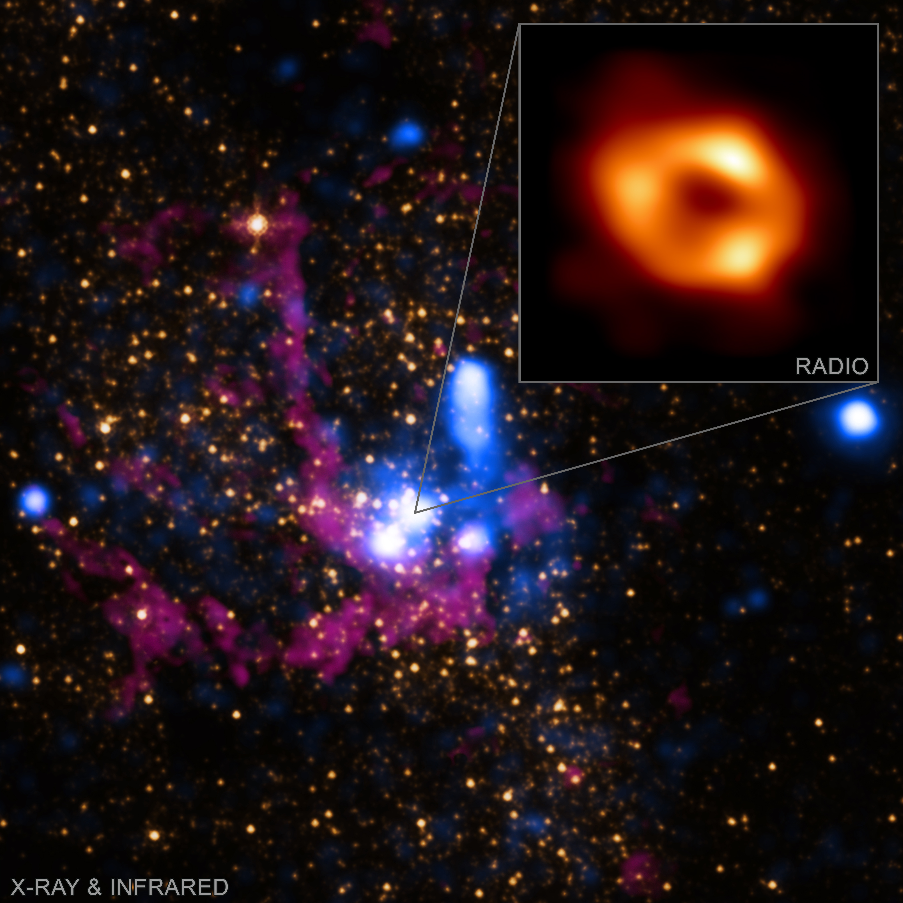
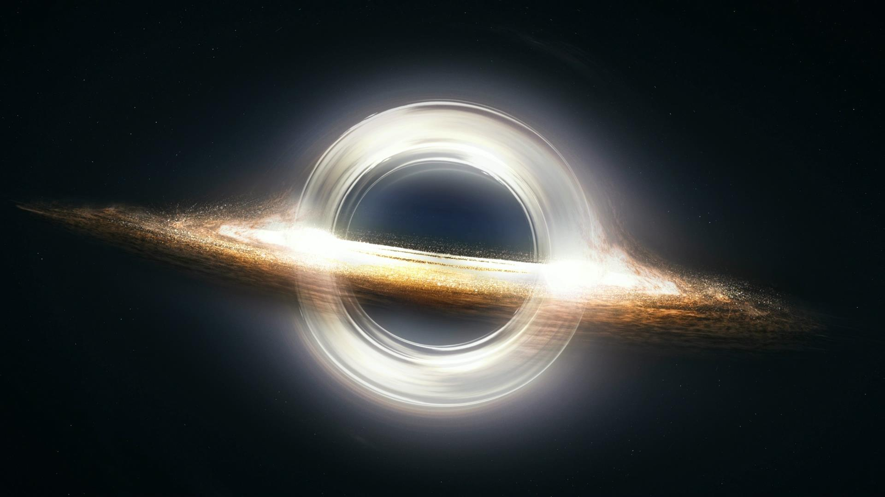

Τι είναι οι Μαύρες Τρύπες;
Μαύρη τρύπα είναι μια περιοχή στο σύμπαν όπου η βαρύτητα είναι τόσο ισχυρή, που τίποτα δεν μπορεί να διαφύγει – ούτε καν το φως. Δημιουργείται όταν ένα πολύ μεγάλο αστέρι καταρρέει κάτω από το ίδιο του το βάρος, συμπιέζοντας όλη του τη μάζα σε ένα απειροελάχιστο σημείο, γνωστό ως μοναδικότητα.
Γύρω από τη μαύρη τρύπα υπάρχει ένα “όριο χωρίς επιστροφή”, ο λεγόμενος ορίζοντας γεγονότων. Αν οτιδήποτε περάσει αυτό το όριο, δεν μπορεί να επιστρέψει ποτέ πίσω.
Πώς Δημιουργούνται οι Μαύρες Τρύπες;
Οι μαύρες τρύπες σχηματίζονται από το τέλος της ζωής ενός πολύ μεγάλου άστρου. Όταν ένα αστέρι εξαντλήσει τα καύσιμά του (κυρίως υδρογόνο και ήλιο), σταματά να παράγει την πίεση ακτινοβολίας που το συγκρατούσε απέναντι στη βαρύτητά του.
Αυτό οδηγεί σε μια κολοσσιαία κατάρρευση του πυρήνα του άστρου. Εάν η μάζα του πυρήνα είναι αρκετά μεγάλη (τουλάχιστον περίπου 3 φορές τη μάζα του Ήλιου), η βαρυτική κατάρρευση δεν σταματά πουθενά — καταρρέει σε ένα σημείο άπειρης πυκνότητας, τη μοναδικότητα, δημιουργώντας μια μαύρη τρύπα.
Πριν την τελική κατάρρευση, το άστρο εκρήγνυται σε μια εντυπωσιακή σουπερνόβα, εκτινάσσοντας τα εξωτερικά του στρώματα στο διάστημα.
Είδη Μαύρων Τρυπών
Αν και όλες οι μαύρες τρύπες λειτουργούν με την ίδια βασική αρχή — καμπυλώνουν τόσο έντονα τον χωροχρόνο που τίποτα δεν μπορεί να διαφύγει — διαφέρουν σημαντικά στο μέγεθος και στην προέλευσή τους.
🌟 Αστρικές Μαύρες Τρύπες
Δημιουργούνται από την κατάρρευση μεγάλων άστρων. Έχουν μάζα από περίπου 3 έως 50 φορές τη μάζα του Ήλιου.
🌀 Ενδιάμεσες Μαύρες Τρύπες
Πιο σπάνιες. Έχουν μάζα από μερικές εκατοντάδες έως μερικές χιλιάδες ηλιακές μάζες. Πιθανόν σχηματίζονται από τη συγχώνευση πολλών αστρικών μαύρων τρυπών.
🌌 Υπερμεγέθεις Μαύρες Τρύπες
Βρίσκονται στο κέντρο σχεδόν όλων των γαλαξιών. Έχουν μάζες εκατομμυρίων έως και δισεκατομμυρίων φορές τη μάζα του Ήλιου. Παράδειγμα: Η μαύρη τρύπα στο κέντρο του Γαλαξία μας — ο Τοξότης A*.
🧠 Πρωτογενείς Μαύρες Τρύπες (Υποθετικές)
Θεωρητικά σχηματίστηκαν αμέσως μετά τη Μεγάλη Έκρηξη. Είναι εξαιρετικά μικρές και παραμένουν θεωρητικές, χωρίς άμεσες αποδείξεις ύπαρξης.

Δομή και Συστατικά μιας Μαύρης Τρύπας
Αν και οι μαύρες τρύπες είναι αντικείμενα που δεν μπορούμε να παρατηρήσουμε άμεσα, η θεωρία προβλέπει ότι έχουν τρία βασικά συστατικά:
🕳️ Ορίζοντας Γεγονότων
Το σημείο χωρίς επιστροφή. Οτιδήποτε περάσει αυτό το όριο, δεν μπορεί να διαφύγει — ούτε καν το φως. Είναι το "όριο" της μαύρης τρύπας.
⚫ Μοναδικότητα
Ένα σημείο άπειρης πυκνότητας στο κέντρο της μαύρης τρύπας, όπου καταρρέει όλη η μάζα. Οι νόμοι της φυσικής, όπως τους γνωρίζουμε, παύουν να ισχύουν.
🌪️ Δίσκος Συσσώρευσης (Accretion Disk)
Ύλη (αέρια, σκόνη, άστρα) που περιστρέφεται γύρω από τη μαύρη τρύπα πριν πέσει μέσα. Θερμαίνεται σε ακραίες θερμοκρασίες και εκπέμπει ακτίνες Χ.
Για περιστρεφόμενες μαύρες τρύπες, όπως περιγράφει η λύση Kerr, υπάρχει και ένα επιπλέον σημαντικό συστατικό:
🌀 Εργόσφαιρα (Ergosphere)
Μια περιοχή έξω από τον ορίζοντα γεγονότων, όπου ο χωροχρόνος περιστρέφεται μαζί με τη μαύρη τρύπα. Είναι δυνατή η εξαγωγή ενέργειας από την εργόσφαιρα μέσω του Penrose Process.
Διάγραμμα Δομής Μαύρης Τρύπας
Το διάγραμμα απεικονίζει τα βασικά μέρη μιας μαύρης τρύπας: τον Ορίζοντα Γεγονότων, τη Μοναδικότητα, τον Δίσκο Συσσώρευσης και την Εργόσφαιρα (για περιστρεφόμενες μαύρες τρύπες).
Η Επιστήμη Πίσω από τις Μαύρες Τρύπες
Οι μαύρες τρύπες είναι αποτέλεσμα της Γενικής Σχετικότητας του Αϊνστάιν. Σύμφωνα με τη θεωρία, η ύλη και η ενέργεια καμπυλώνουν τον ίδιο τον χωροχρόνο. Όσο περισσότερη μάζα έχει ένα αντικείμενο, τόσο πιο έντονη είναι η καμπύλωση.
Όταν η μάζα συμπυκνωθεί υπερβολικά, όπως συμβαίνει στην κατάρρευση ενός μεγάλου άστρου, η καμπύλωση γίνεται τόσο έντονη που σχηματίζεται μια μαύρη τρύπα — ένα σημείο όπου ο χωροχρόνος «κλείνει» πάνω στον εαυτό του.
Το όριο γύρω από τη μαύρη τρύπα ορίζεται από την Ακτίνα Schwarzschild, δηλαδή την απόσταση στην οποία, αν συμπιεστεί οποιοδήποτε αντικείμενο, γίνεται μαύρη τρύπα. Για παράδειγμα, αν η Γη συμπιεστεί σε μέγεθος όσο ένα μπιζέλι, θα γίνει μαύρη τρύπα.
Αν και οι εξισώσεις που περιγράφουν τη συμπεριφορά τους είναι πολύπλοκες, η βασική ιδέα είναι ότι η βαρύτητα δεν είναι απλώς μια δύναμη — είναι το αποτέλεσμα της καμπύλωσης του ίδιου του χωροχρόνου.
Η μάζα καμπυλώνει τον χωροχρόνο. Όσο μεγαλύτερη η μάζα, τόσο βαθύτερη η καμπύλωση.
Φαινόμενα και Επιδράσεις των Μαύρων Τρυπών
Οι μαύρες τρύπες δεν είναι απλώς "τρύπες" στο διάστημα. Προκαλούν εντυπωσιακά φαινόμενα που μπορούμε να ανιχνεύσουμε και να παρατηρήσουμε έμμεσα.
🔭 Βαρυτικός Φακός
Η ισχυρή βαρυτική καμπύλωση γύρω από μια μαύρη τρύπα λυγίζει το φως από αντικείμενα που βρίσκονται πίσω της. Το φαινόμενο μοιάζει σαν να βλέπουμε το διάστημα μέσα από μεγεθυντικό φακό.
🧵 Spaghettification
Όταν ένα αντικείμενο πλησιάζει μια μαύρη τρύπα, η τεράστια βαρυτική διαφορά μεταξύ του κοντινού και του μακρινού σημείου προκαλεί επιμήκυνση — το αντικείμενο "τεντώνεται" σε μορφή μακαρονιού.
💥 Εκπομπή Ακτίνων Χ
Η ύλη που περιστρέφεται γύρω από τη μαύρη τρύπα στον δίσκο συσσώρευσης θερμαίνεται σε ακραίες θερμοκρασίες και εκπέμπει ακτίνες Χ, τις οποίες ανιχνεύουμε με τηλεσκόπια.
⚡ Penrose Process
Σε περιστρεφόμενες μαύρες τρύπες, η εργόσφαιρα επιτρέπει την εξαγωγή ενέργειας. Θεωρητικά, ένα αντικείμενο μπορεί να διασπαστεί εκεί, με το ένα κομμάτι να πέφτει στη μαύρη τρύπα και το άλλο να παίρνει έξτρα ενέργεια και να εκτοξεύεται.
Απεικόνιση Βαρυτικού Φακού
Το φως από μακρινά αντικείμενα λυγίζει γύρω από τη μαύρη τρύπα, δημιουργώντας παραμορφώσεις, δαχτυλίδια ή πολλαπλές εικόνες του ίδιου αντικειμένου.
Θέλεις να Εμβαθύνεις Περισσότερο;
Αν ενδιαφέρεσαι να εξερευνήσεις τη μαθηματική ανάλυση, τις εξισώσεις και την επιστημονική τεκμηρίωση πίσω από τις μαύρες τρύπες, μπορείς να επισκεφθείς την ενότητα της πτυχιακής μου εργασίας.
Gallery: Το Σύμπαν των Μαύρων Τρυπών
 


